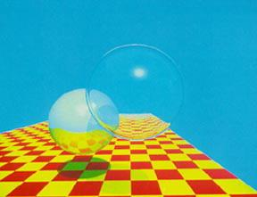

Overview
The purpose of this checkpoint is to set the scene for our future ray tracer. We'll demonstrate our final and developing ray tracers using the same scene from Turner Whitted's 1980 paper. However, since we've yet to complete our ray tracer we will leave the shapes solid and utilize this time to figure out how everything will be placed in the scene.
Elements in the scene:
- 2 spheres
- 1 plane
- 1 light source
- 1 camera
Observations:
- The sphere closer to the camera is translucent and larger in size.
- The sphere further away is reflective and smaller in size.
- The light is located slightly above and to the right of the camera and seems to be a point light source
Scene Descriptions:
Blue Sphere
- Radius: 0.5 units
- Height Segments: 50
- Width Segments: 50
- Location" (0,0.1,2)
Red Sphere
- Radius: 0.45 units
- Height Segments: 50
- Width Segments: 50
- Location: (-0.75,-0.3,1)
Plane
- Width: 4 units
- Height: 8 units
- Rotation on x-axis: +4.8 radians
- Location: (-0.5,-1,0)
Camera
- Type: Perspective
- Look at: (0,0,0)
- FOV: 75
- Frustum near plane: 1
- Frustum far plane: 1000
- Location: (0,0,4)
Light Source
- Type: Point
- Color: #ffffff
- Intensity: 1
- Falloff: 100
- Location: (1,1,4)

Rendering
For this rendering, I've utilized WebGL through the three.js javascript library and provide the WebGL canvas to interact with and observe the scene.
But just in case your browser doesn't support WebGL, I've also provided an image of the rendering.

Rotate Left
Reset
Rotate Right